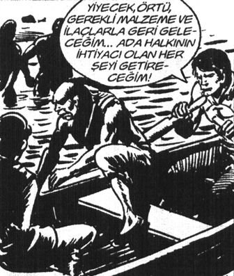

– Selamünaleyküm millet.
– Ve aleykümselam Şef.
Dino: Baba o kitap ne?
– Ferrari’sini Satan Bilge.
Şino: Satar tabii aracı, çok yakar abi. Benzin mi dayanır merete.
Musti: Abi haber çıktıydı hatırlıyor musun? Belçika’da bir Türk Ferrari’sine LPG taktırmış diye.
Ali Mahmut: Brezilyalı’dır oğlum o!
Ahmedürey: Niye be kanka?
Ali Mahmut: Brezilyalılar çok akıllı olur. Adamın biri süpermarkette yarım elma almak istiyor. Tezgâhtarla kapışıyorlar, tezgâhtar müdürün yanına gidiyor, “İçeride bir hayvan var. Bu elmanın yarısını almak istiyor” diyor. Bakıyor müdür sessiz; arkasını dönüyor. Bu müşteri arkasında. Adamı görünce “Bu beyefendi de diğer yarısını almak istiyor” diyor.
Gülüşmeler.
Ahmedürey: Abi bunun Brezilya’yla ne alakası var?
Ali Mahmut:
– Beklersen görürsün, bitmedi daha! Neyse adama veriyorlar elmanın yarısını, adam gidiyor. Müdür buna diyor ki “Amma akıllı adammışsın sen. Nerelisin bakayım?” O da “Brezilyalıyım abi” diyo. Müdür “Yav ne işin var Türkiye’de, yaşasaydın ya Brezilya’da” deyince, bizimkisi “Müdürüm, Brezilya’da ya futbolcu olursun ya da hayat kadını. Başka da bir şey olamazsın” diyo. Müdür “Yalnız benim karım da Brezilyalı” deyince bir sessizlik hüküm sürüyor; bizimki soruyor: “Abi, yenge hangi takımda oynuyor?”
Bu sefer kahkahalar epey bir sürdü.
Ahmedürey: Şef sen bizim elleri bir garip sıkmaya başladın, nedir abi? Böyle elini “öp babanın elini” gibi uzatıyorsun da koyun pazarlığı yapan celep gibi mengenelik yapıyorsun. Nedir abi?
Hıdır: Ağabey, “beden dili” kitaplarında okudum, öyle sıktım mı güç bana geçiyormuş.
Musti: Yuh. Abi güç sende olsa ne olacak, sohbet ediyoruz en nihayet.
Dino: Abi, ses de değişti senin. Çay isterken bile, boğazlanmış dombay gibi ses çıkarıyorsun. Niye bağırıyon ki?
– Ne bileyim bir kitap okudum, “Güç sihirbazı, nasıl başarıya ulaşılır” diye. Orada “Sesi diyaframdan alın, genizden verin” diyo. Etki saham artarmış.
Ali Mahmut: Abi sen eskiden mideden alıp kıçından fıslatmıyordun ki. Eski sesin iyiydi be abi. Böyle sanki kahvede Japon Ninjası besliyor gibi olduk. Devamlı harakiri yapan çengçüngler gibi bağırıyorsun.
– Ağabey ne biliyim bu şeflik falan çok bekledik belki böyle.
Musti: Yeriz oğlum şefliğini. Sen makamı burada aldın. Bizim Şefimizsin, biz seni olduğun gibi seviyoruz abi.
– Sağ olun baba. Ama aslında iyi bir takım almam lazım, on yıldır aynı kıyafetler. Bakanlıktaki hanımların şebeği olmuşuz. Dalga geçiyorlarmış.
Ali Kuyumcu: Demirci’ye gidince Zinnur eniştenden alırsın.
– Yok ağabey kitaplar diyor ki markalı olursa yükselirmişim. İmajımız olmadan hiçbir noktaya gidemezmişiz. İş dünyası güç oyunları olduğundan kıyafet belirleyici bir kritermiş. Aslında şef olmamamda Zinnur Eniştemin de kabahati var. O zaman şöyle markalı bir şeyler verseydi bana, belki bugün şeftik.
Ahmedürey: Abi boş ver onu. Sen bizim gönlümüzde şefsin zaten.
Musti fısıldayarak: Abi onu biraz önce ben söyledim zaten.
Ahmedürey: Hadi yaa. O zaman şef “Kanaryayı altın kafese koşmuşlar, yine de vatanım demiş.”
Dino: Abi burada, “Eşeğe altın semer takmışlar” olmayacak mıydı? Bir de hayvanı bildiğim kadarıyla koşmuyorlar, koyuyorlar. Bir de hayvan, bilmiyorum ama bülbül galiba.
– Doğru abi. Bir tek altını tutturduk değil mi?
Kıkırdamalar...
Kahveci Şahin masaya geldi “Evet, bugünkü hikâyemiz, buyurun.”
Herkese birer fotokopi verdi.
Dino: Ya abi bu kahvenin adı niye “Hortor” söylemeyecek misin?
Şahin: Daha kahvenin adını bilmiyorsun, manasını ne diye soruyorsun. Oku biraz oku.
Ali Mahmut: Şahin Abi civarda o kadar kahve varken öğrenciler niye bu kahveye bu kadar çok geliyor?
Şahin: Bilmem ki.
Ali Kuyumcu: Biz iki orta şekerli kahve alalım.
Şahin ocağa bağırır: Gönder iki orta dünya.
GÜNÜN HİKÂYESİ
SATRANÇ VE TAVLA
Pers İmparatoru’nun Başveziri Buzur Mehir tarafından 1400 yıl önce tasarlanan tavla oyunu, dünyanın en popüler oyunlarından biridir. Zaman kavramından alınan ilhamla tasarlanan oyunun zamana böylesine direnmesi son derece etkileyici.
4 köşesi 4 mevsimi,
Tavlanın içindeki karşılıklı 6’şar hane 12 ayı,
Pulların toplamı ayın 30 gününü,
Siyah ve beyaz pullar gece ve gündüzü,
Karşılıklı 12’şer hane günün 24 saatini simgeler.
Eski zamanlarda Hint İmparatoru, satranç oyununu Pers İmparatoru’na, yanında bir mektup ile hediye olarak göndermiştir. Mektubunda oyunla ilgili hiçbir açıklama yapmazken şöyle bir mesaj yazmıştır:
Pers İmparatoru’na; kim daha çok düşünüyor, kim daha iyi biliyor, kim daha ileriyi görüyorsa o kazanır. İşte hayat budur...
Pers İmparatoru dönemin en âlim veziri olan Buzur Mehir ile bu mesajı paylaşarak, ondan oyunu çözmesini ve kendisinin de karşılık olarak Hint İmparatoru’na hediye vermesi için başka bir oyun icat etmesini ister. Vezir haftalarca çalıştıktan sonra gönderilen satrancın her taş hareketini ve oyunu çözer. Daha sonra da on günde tavlayı icat eder ve imparatoruna sunar. Hint İmparatoru’na tavla oyunuyla birlikte gönderilmek üzere şöyle bir mesaj hazırlanır:
Hint İmparatoru’na; evet, kim daha çok düşünüyor, kim daha iyi biliyor, kim daha ileriyi görüyorsa o kazanır. Ama hayat biraz da şanstır.
Kaveciniz Şahin İpek
İnternetten indirdim arkadaşlar.
Zihnin, vücudun ve hatta ruhun için yaptığın çalışmalar sırasında yaşayacağın değişiklikler seni şaşırtacak. [...] İnsanlar sana daha genç ve mutlu göründüğünü söyleyecek. Kalıcı bir iyi hissetme durumu ve denge, yaşamını süratle değiştirecek.[8]
